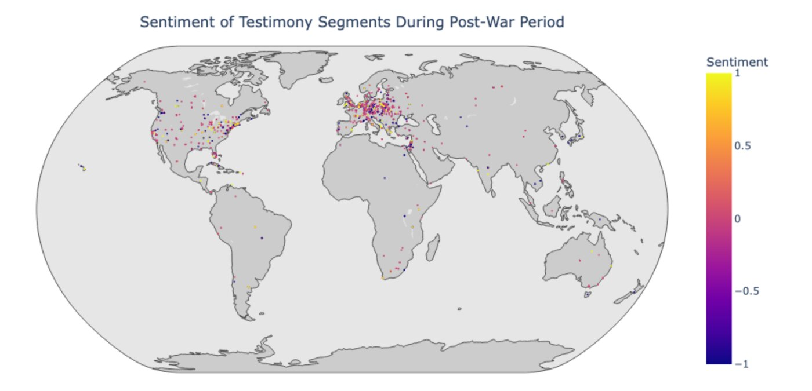

Geographies of Affect was a UCLA Digital Humanities capstone that asked a hard question: could computational tools trace how survivors' emotions shift across the places in their stories — the camps, the routes of flight, the postwar homes — without flattening memory into a single number? It drew on 984 English-language oral histories from the USC Shoah Foundation's Visual History Archive.
Context
Holocaust testimonies are extremely emotionally layered. The premise of the project — and its risk — was to bring sentiment analysis and mapping to exactly that kind of material: to ask what patterns emerge when you track emotion across narrative time and geographic space, while staying honest about what those tools can and cannot see.
My role
I handled the sentiment-analysis side of a three-person team, while Laurel Woods led the data visualization and Ulysses Pascal led the mapping. That meant much of the manual annotation, building and comparing the NLP approaches: dictionary tools, linear classifiers, and transformers, as well as fine-tuning a GPT-2 model on our labeled data.
Approach
We paired close, manual annotation with computational methods in Python (NLTK, spaCy, scikit-learn). Sentiment ran through a range of models, from dictionary tools to a fine-tuned GPT-2 and GPT-3; separately, a spaCy named-entity pipeline pulled the place names from each testimony and geocoded them through the Google Maps API.
To choose a sentiment method rather than assume one, we compared three families head-to-head: dictionary-based tools (VADER, TextBlob), linear classifiers (Naive Bayes, Logistic Regression), and transformer models. Two of us divided and hand-annotated 864 testimony segments — 354 negative, 314 neutral, 196 positive — to build a grounded evaluation set, and we extracted and geocoded 144,000+ place entities to anchor emotion to geography.
None of them scored especially high. The dictionary and linear methods hovered around 50% on those 864 labels — VADER only climbed from 54% to 58% after I rebuilt its lexicon for this material, where by default it read "People became like animals" as positive. A fine-tuned GPT-2 reached 66%, and GPT-3, too costly to run across the full corpus, topped out near 70%.
Findings
The transformer models came out ahead by a wide margin. That ranking turned out to be the least interesting thing we measured.
What we kept running into was that the labels themselves didn't fit the material. A survivor describing a single place — a barracks, a border crossing, an apartment they returned to and found occupied — could hold grief, defiance, tenderness, and numbness in the same passage, not in sequence but at once. Scoring that from −1 to 1 doesn't compress the meaning down to its essentials. It discards most of it and reports the remainder as though it were the whole.
That showed up first in our own annotation, before any model touched the data. Two careful readers can look at the same sentence about liberation and code it in opposite directions, and both be right, because liberation in these testimonies is very often not a happy ending. The disagreement wasn't carelessness, but it was the material telling us the question was badly formed.
So the honest finding wasn't that our tools were too weak; rather, it was that the construct was ill-posed. "Sentiment," as an ordinal scale, presumes a single underlying quantity that a passage contains more or less of. Testimony doesn't behave that way, and no amount of model capacity supplies a thing that isn't there.
What the visualizations could do — and this is where the project earned its keep — was hold the ambiguity in view instead of resolving it.

Averaged across the 984 testimonies, the sentiment curve roughly followed the arc of a life: steadier at the start and end, where people talked about childhood and postwar family, and lowest through the middle. While that in itself wasn't a discovery, what it was good for was spotting the testimonies that didn't follow it, which is a question you can only answer by going back and reading them.
Postscript — 2026
I've come back to this project wondering whether it expired. Sentiment analysis in 2022 was meaningfully worse than what's available now, and the obvious reading is that a better model would have dissolved the problem. I don't think it did.
NLP has since built an entire line of work around what it calls human label variation, or data perspectivism: the position that for subjective tasks there frequently is no ground truth, and that annotator disagreement is signal to be preserved rather than error to be repaired. Recent evaluations find that large language models handle simple sentiment well but struggle with complex affect, and struggle specifically at modeling the disagreement between human annotators. For scale, GoEmotions — a standard emotion-labeling dataset — reports per-emotion inter-annotator agreement (Cohen's kappa) that ranges from about 0.75 for "gratitude" down to roughly 0.10 for "grief." People don't agree with each other about this either, least of all about the emotions this material is made of.
A stronger model doesn't recover a true label that a weaker one missed. It produces a more confident number for a question that doesn't have one. On this material, that's worse than being obviously wrong, because obviously wrong invites a second look.
The stakes moved too. In 2024 UNESCO published a report warning that generative AI could distort the historical record of the Holocaust — documenting fabricated events and invented witness quotes, and flagging the technology's tendency to oversimplify complex history and privilege a narrow range of sources. And the USC Shoah Foundation, the archive this project drew on, is now using language models to help catalogue and analyze testimony at scale. What we were asking as a student capstone is an operational question now, at the institution that holds the material.
Our answer was never that we shouldn't have tried. It's that a tool pointed at this kind of material has to show you where it's uncertain, and hand you back to the source rather than stand in for it. That's a design principle, and it's the one I've carried into everything since.
Reflection
This project changed how I work. It made me careful about what a metric can quietly erase, and that instinct to design for meaning and not just measurement, is a big part of what pulled me toward HCI.
References
- Plank, B. (2022). The "problem" of human label variation: On ground truth in data, modeling and evaluation. EMNLP.
- Basile, V., et al. (2021). We need to consider disagreement in evaluation. Proceedings of the 1st Workshop on Benchmarking: Past, Present and Future of Natural Language Processing.
- Demszky, D., et al. (2020). GoEmotions: A dataset of fine-grained emotions. ACL.
- UNESCO & World Jewish Congress (2024). AI and the Holocaust: Rewriting History?
Note: I'm currently in the process of rolling out a design and copy refresh for this case study. Check back soon for the updated version!